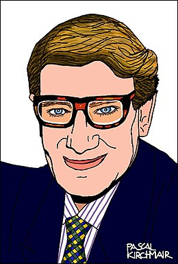

<!DOCTYPE html>
<html lang="fr">
    <head>
        <title>Titre de votre site</title>
        <meta charset="utf-8">
        <link rel="stylesheet" href="style.css" type="text/css"/>   
    </head>
    <body>
        <!--La mode-->    
    </body>
</html>

<header>
    <h1>La MODE</h1>
    <nav>
        <ul>
            <li><a href="index.html">Accueil</a></li>
            
        </ul>
    </nav>
</header>

<section>
<h2>Coco Chanel, une grande créatrice</h2>
<p>Née le 19 août 1833,décedée le 10 janvier 1971, devenue la compagne de Boy Capel.
Célèbre pour ses créations de haute couture, ainsi que pour les parfums portant son nom.<br />
Son surnom, "Coco" viens d'une musique qu'elle chantait en 1913 "Qui qu'a vu coco sur le Trocadéro?"
Taille des robes de sport à partir des maillots de garçons-d'écurie en jersey, libérant le corps, abandonnant la taille, Chanel annonce cette « silhouette neuve » qui lui vaudra sa réputation

<br />


</section>

<section>
<h2>Yves Saint Laurent</h2>
<p>Yves Mathieu-Saint-Laurent, dit Yves Saint Laurent 
né le 1er août 1936 à Oran, en Algérie, alors française, et mort le 1er juin 2008 à Paris.<br />
Un des plus célèbres grands couturiers français, créateur de collections de haute couture qui ont marqué l'histoire de la mode au XXe siècle. 
Le groupe Yves Saint Laurent s'associe en 1993 à Sanofi.
Le groupe se divise désormais en deux : Sanofi détient 100% d'Yves Saint Laurent

<br />



</section>

